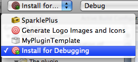
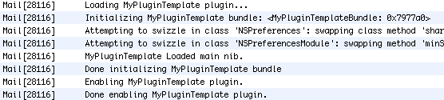
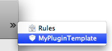
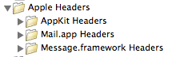
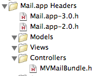
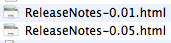
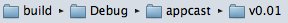
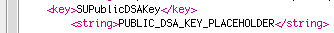
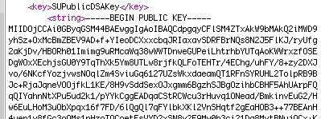

Thanks for using my Mail.app plugin template!
If you have any comments or questions about using the template, or the process of Mail.app plugin creation, feel free to contact me feel free to contact me:
I can't write your plugin for you (actually, I can, for a reasonable fee), but I'd be happy to help you out and orient you.
In your project, of course, this will be replaced with whatever you entered as your project's name.
To get started, try compiling and running the template out of the box:

Click (or press ⌘B).
This should compile without a problem – let me know if you encounter trouble!
The Install for Debugging target will also copy the plugin into your ~/Library/Mail/Bundles folder.
You should find confirmation of the plugin loading in the console:

And, upon opening Mail's preferences, you should see an icon for your plugin's preference pane.
(You might need to click the chevron on the right side of the toolbar to see it).

-(void)initializeCustomizations
I've included header files (produced with class-dump) for Mail.app, Message.framework, and the AppKit
in the template, as shown here:

If you want to override or customize the behavior of an existing class from one of these frameworks, I suggest that you consult the appropriate header file, then pull header for the class of interest into its own header file. You can then reference that header file as needed.
For example, I've already done that with the
MVMailBundle class, which is the superclass for all Mail plugins:

The plugin icon and logo images are generated from source images in the Images folder:
If both of these files are present, the Icon.icns file is used to generate the icon, and the Image.tiff file to generate the logo image (and preferences pane image).
If only one of these files is present, then that one file is used to generate both the icon and the logo image. The conversion from .icns to .tiff and from .tiff to .icns is imperfect, which is why you have the option of generating both files yourself.
The template includes support for creation of simple release notes, which can be automatically included in the distribution packages.
CFBundleVersion key is appropriately
updated in Plugin/Info.plist.
A file will be created in the AppCast-ReleaseNotes folder:

The file is generated from a template in SparklePlus-Templates, which you can of course edit or replace.
The template includes support for creating a disk image for simple double-click installation of the plugin.
To generate a ready-to-distribute disk image:
The template supports auto-updating with a customized version of the SparklePlus framework.
On startup, the plugin will check the URL (set by the SUFeedURL
key in the Plugin/Info.plist file)
for an RSS 2.0 feed, as described in the SparklePlus documentation.
This URL is currently set to a dummy page on my own harnly.net domain – obviously, you'll want to change this to something appropriate.
To build a version of the plugin ready for appcasting:
CFBundleVersion key is appropriately updated in
Plugin/Info.plist.
A directory will be generated:

containing a zipped copy of the mailbundle,
a file named appcast-item.xml appropriate for inclusion in an RSS feed,
and a file named appcast.xml which is a valid RSS 2.0 feed,
containing this version's item as the only item.
If you want to test the appcasting:
CFBundleVersion key in Plugin/Info.plist to something appropriate
1.0).SUFeedURL key in Plugin/Info.plist to something appropriate
http://localhost/plugin/appcast.xml).CFBundleVersion key in Plugin/Info.plist to a larger value
1.1).http://localhost/plugin/appcast/v__VERSION__/MyPluginTemplate.mailbundle.zip).Now launch Mail, and you should receive the update notification, and be able to download and install the "update".
The template makes it very easy to ensure the security of your appcast by signing your appcast enclosures.
To use appcast signing, just do these three very simple steps:
SUExpectsDSASignature,
changing it from <false/>
to <true/>.
Step 2 generated your Appcast keys.
This should have run for a good 20-30 seconds, as the private and public keys are generated. Once this step is complete, you should find the keys within the AppCast-Keys folder:
You should also find that the Plugin/Info.plistfile has been updated to include the public key.
The SUPublicDSAKey key should have changed from this:

to something like this:

After you've changed the key SUExpectsDSASignature, when the plugin finds and downloads
a SparklePlus update, it will first check to ensure that the feed contains a DSA signature, and
that the signature was generated by your private key.
The Package for Appcast target takes care of this automatically, generating the signature.base64.txt file from the zipped mailbundle, and adding that signature to the appcast-item.xml file.
Good luck!
~Aaron